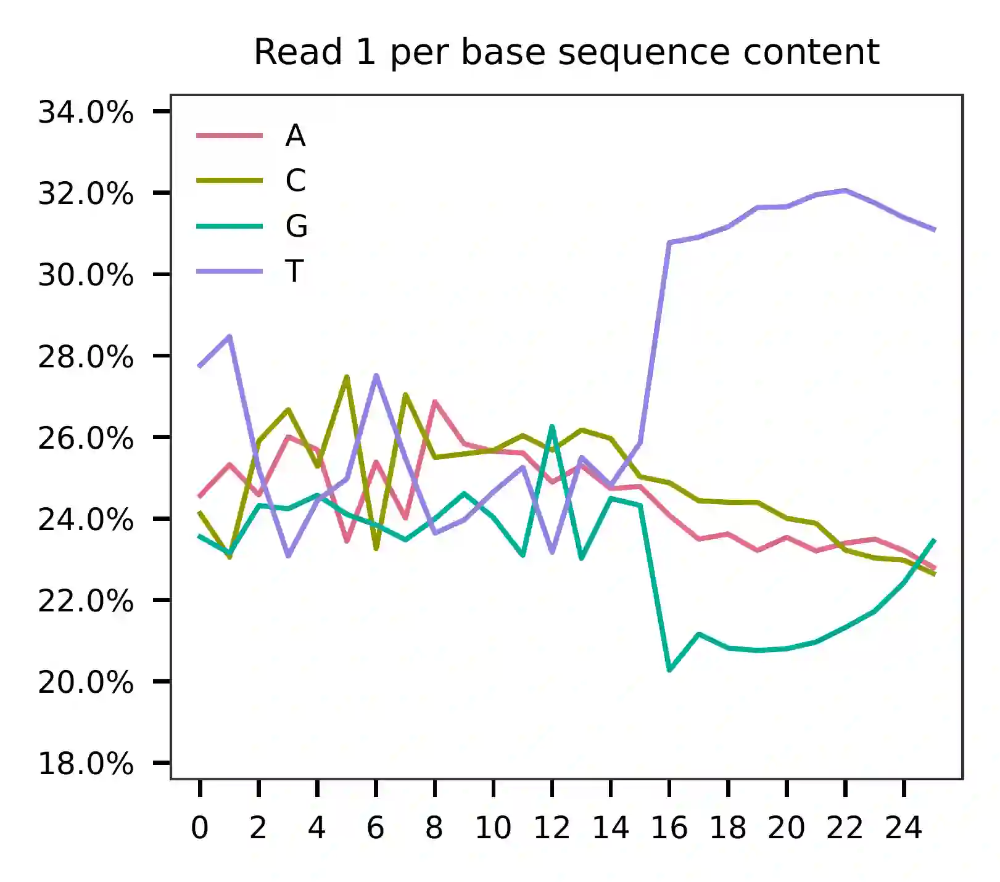
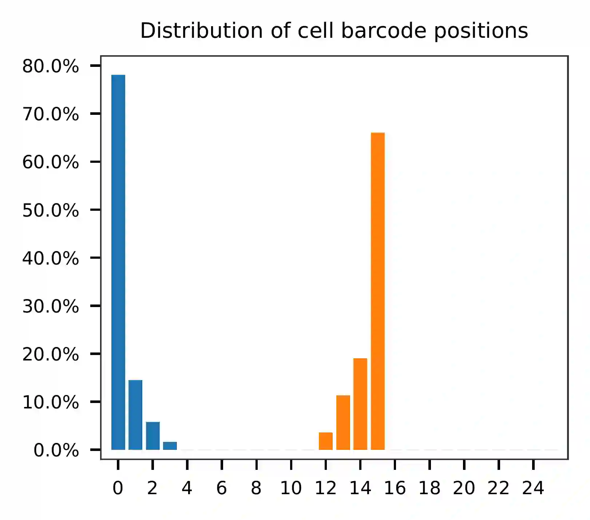
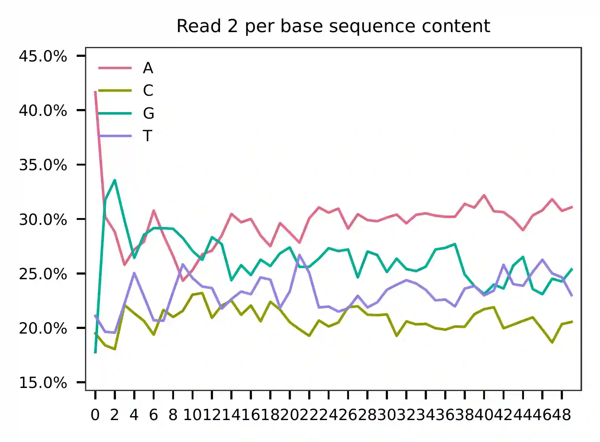
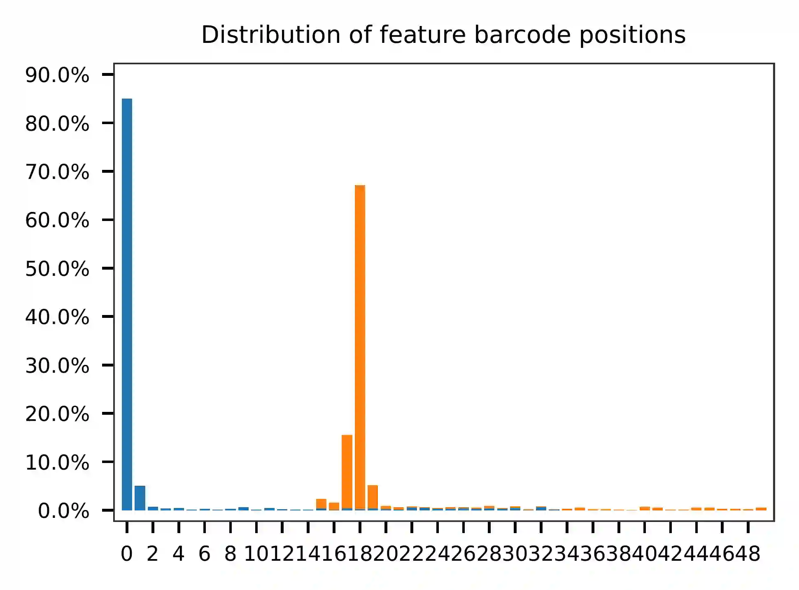
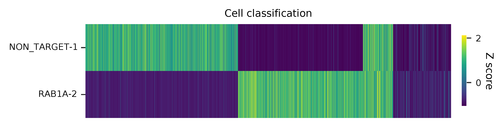
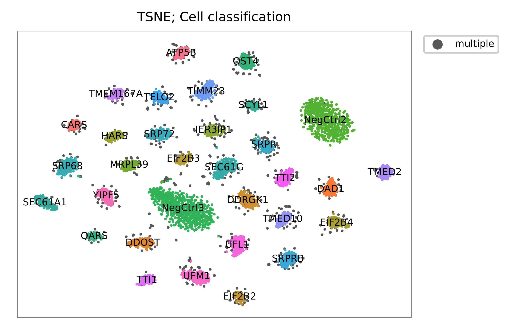

Direct-capture Perturb-seq; CRISPRi-based Screen of Unfolded Protein Response (UPR) Using 3’ sgRNA-CR1cs1#
Dataset: Direct-capture Perturb-seq (sgRNA-CR1cs1)
Replogle, J.M., Norman, T.M., Xu, A., Hussmann, J.A., Chen, J., Cogan, J.Z., Meer, E.J., Terry, J.M., Riordan, D.P., Srinivas, N., et al. (2020). Combinatorial single-cell CRISPR screens by direct guide RNA capture and targeted sequencing. Nat. Biotechnol. 38, 954–961.
Preparation#
Download fastq files from Gene Expression Omnibus.
$ cat SRR11214033_2.fastq.gz SRR11214034_2.fastq.gz SRR11214035_2.fastq.gz SRR11214036_2.fastq.gz > GSM4367980_1.fq.gz
$ cat SRR11214033_3.fastq.gz SRR11214034_3.fastq.gz SRR11214035_3.fastq.gz SRR11214036_3.fastq.gz > GSM4367980_2.fq.gz
Prepare cell barcodes.
$ wget https://ftp.ncbi.nlm.nih.gov/geo/samples/GSM4367nnn/GSM4367979/suppl/GSM4367979_exp1-5.barcodes.tsv.gz
$ gzip -dc GSM4367979_exp1-5.barcodes.tsv.gz | grep '\-4' > cell_barcodes.txt
Inspect cell barcodes (Fig. 2d, middle column).
$ wc -l cell_barcodes.txt
8727
$ head cell_barcodes.txt
AAACCCAAGAGGGCGA-4
AAACCCACACCCTCTA-4
AAACCCACATAGATGA-4
AAACCCACATATCGGT-4
AAACCCATCATGAGTC-4
AAACCCATCCGGTAAT-4
AAACCCATCCTGCCAT-4
AAACCCATCTCACCCA-4
AAACGAAAGCCTGACC-4
AAACGAAAGTGCCGAA-4
Prepare feature barcodes. sgRNA sequences can be found in Supplementary Table 2 and are truncated to equal length.
$ cat feature_barcodes_UPR_edited.tsv
NegCtrl2 GCGATGGGGGGGTGGGTAG
NegCtrl3 GACGACTAGTTAGGCGTGT
DDRGK1 GCGGTCCACAAAGGCTCAG
UFL1 GTGACTCGCAGTAGACGCG
UFM1 GCGGTAAGCAAACACTTAC
SEC61G GCTCCAGTGCTACGTGTCC
SEC61A1 GCTGTGCAGTGGAACGCGC
SRP68 GAGAAGCAGGTCCCAGGCG
SRPRB GGCCACCCGGCGCGAGTCC
SRPR GGCGAACGCGGCCTGAATT
SRP72 GCCTCCAAGATGGCGAGCG
TIMM23 GAAGTAGGCGCTGGCAACG
ATP5B GAGTCTCCGCAAGGCCCCG
MRPL39 GTCTGGCTGGTCGCACCCG
TMED2 GTGAGGCCGAAGCCAGGAC
TMED10 GAGACTCGTTCACCACCGA
CARS GAGCCATGGCAGATTCCTC
HARS GCTCAAGTGGACAGCCGGG
QARS GCGCGCTCAGTGAGAGGAA
TTI1 GAAGGCTGGAAGACGAGGT
TELO2 GCCGCGGAGACCCGCCCCA
TTI2 GTCCGGATCCTGTTAGACA
TMEM167A GCAGCCACATCACCCTTCC
YIPF5 GGGTGCAGGGGACCGCGTC
SCYL1 GGCCGGAGGACCCGGAGCT
IER3IP1 GGGGCCCCATCGGCTTCCG
DDOST GTGGGTCCTTCGGCAGGAG
DAD1 GACCTTGCGTGCAGTTATG
OST4 GGCTTGTTCGCTGGTGGCG
EIF2B4 GCTGAGGGCGATGGCTGCT
EIF2B2 GTAGCTGCCTTCAGCCTTC
EIF2B3 GCCATTGGGCTGTCAGTCA
First we screen reads that have the constant sequence (GTACATGGGG)
upstream of sgRNAs on read 2 (cutadapt, version 3.7).
$ cutadapt \
--cores 0 \
--front GTACATGGGG \
--length 50 \
--minimum-length 50:26 \
--trimmed-only \
--output read_2_trimmed.fq.gz --paired-output read_1_trimmed.fq.gz \
GSM4367980_2.fq.gz GSM4367980_1.fq.gz
Preview the filtering result: 104,375,315 out of 404,963,129 (25.8%) read pairs are kept for sgRNA identification.
== Read fate breakdown ==
Pairs that were too short: 377,332 (0.1%)
Pairs discarded as untrimmed: 300,210,482 (74.1%)
Pairs written (passing filters): 104,375,315 (25.8%)
QC#
The first 20,000 read pairs are sampled (set by -n, default
100,000) for quality control. The -t option can be used to set
the number of threads. By default, diagnostic results and plots are
generated in the qc directory (set by --output_directory), and
the full length of read 1 and read 2 are searched against reference cell
and feature barcodes, respectively. The per base content of both read
pairs and the distribution of matched barcode positions are summarized.
Use -r1_c and/or -r2_c to limit the search range, and -cb_n
and/or -fb_n to set the mismatch tolerance for cell and feature
barcode matching (default 3).
$ fba qc \
-1 read_1_trimmed.fq.gz \
-2 read_2_trimmed.fq.gz \
-w cell_barcodes.txt \
-f feature_barcodes_UPR_edited.tsv \
-r1_c 0,16 \
-n 200000
This library is built using the Chromium Single Cell 3’ Solution v3 and sequenced on Illumina NovaSeq 6000. The first 16 bases are cell barcodes and the following 10 bases are UMIs. Based on the base content plot, the GC content of cell barcodes are quite even. The UMIs are slightly T enriched.
 {kind=link}
{kind=link}
As for read 2, based on the per base content, it suggests that read 2 is slightly A enriched.
 {kind=link}
{kind=link}
The detailed qc results are stored in
feature_barcoding_output.tsv.gz file. matching_pos columns
indicate the matched positions on reads. matching_description
columns indicate mismatches in substitutions:insertions:deletions
format.
$ gzip -dc feature_barcoding_output.tsv.gz | grep -v no_ | head
read1_seq cell_barcode cb_matching_pos cb_matching_description read2_seq feature_barcode fb_matching_pos fb_matching_description
GTGTCCTGTCGCGCATaggacttccg GTGTCCTCACGCGCAT 0:16 2:0:0 GTGACTCGCAGTAGACGCGGGTTTAAGAGCTAAGCTGGAAACAGCATAGC UFL1_GTGACTCGCAGTAGACGCG 0:19 0:0:0
CGGAGAAAGACCTGTCggtatgggac CGGAGAATCACCTGTC 0:16 2:0:0 GGCTTGTTCGCTGGTGGCGTGTTTAAGAGCTAAGCTGGAAACAGCATAGC OST4_GGCTTGTTCGCTGGTGGCG 0:19 0:0:0
TAGTGCAGTGCATGCCccgaatgttt TAGTGCAGTGGTATGG 0:15 2:0:1 GGGCCGGAGGACCCGGAGCTAGTTTAAGAGCTAAGCTGGAAACAGCATAG SCYL1_GGCCGGAGGACCCGGAGCT 1:20 0:0:0
GTCATCCGTTGACTACgggggccact ATCCTATGTTGACTAC 3:16 0:0:3 GGCTTGTTCGCTGGTGGCGTGTTTAAGAGCTAAGCTGGAAACAGCATAGC OST4_GGCTTGTTCGCTGGTGGCG 0:19 0:0:0
ATCGCCTCAAGGATATttcagattaa TCGACCTCAAGAATGT 1:16 2:0:1 GAGCCATGGCAGATTCCTCCGTTTAAGAGCTAAGCTGGAAACAGCATAGC CARS_GAGCCATGGCAGATTCCTC 0:19 0:0:0
GTTGCGGGTCGCCACAgtacatactt GTTGCGGCACGCCACA 0:16 2:0:0 GCGGTCCACAAAGGCTCAGAGTTTAAGAGCTAAGCTGGAAACAGCATAGC DDRGK1_GCGGTCCACAAAGGCTCAG 0:19 0:0:0
TGCATGATCGTGATCGtggagaaagt AGTGATCAGGTGATCG 3:16 0:0:3 CTCCAGTGCTACGTGTCCCGTTTAAGAGCTAAGCTGGAAACAGCATAGCA SEC61G_GCTCCAGTGCTACGTGTCC 0:18 0:0:1
CTCCCAAAGCCGTGTTcatcgatatt CTCCCAAAGACCTTTG 0:14 1:0:2 GTGACTCGCAGTAGACGCGGGTTTAAGAGCTAAGCTGGAAACAGCATAGC UFL1_GTGACTCGCAGTAGACGCG 0:19 0:0:0
TTTGGTTGTCGACAGAttacgcgttt TTGGTTTGTCGCACAC 1:15 1:0:2 GACGACTAGTTAGGCGTGTAGTTTAAGAGCTAAGCTGGAAACAGCATAGC NegCtrl3_GACGACTAGTTAGGCGTGT 0:19 0:0:0
Barcode extraction#
Search ranges are set to 0,16 on read 1 and 0,19 on read 2. Two
mismatches for cell and feature barcodes (-cb_m, -cf_m) are
allowed.
$ fba extract \
-1 read_1_trimmed.fq.gz \
-2 read_2_trimmed.fq.gz \
-w cell_barcodes.txt \
-f feature_barcodes_UPR_edited.tsv \
-o feature_barcoding_output.tsv.gz \
-r1_c 0,16 \
-r2_c 0,19 \
-cb_m 2 \
-fb_m 2
Preview of result.
$ gzip -dc feature_barcoding_output.tsv.gz | head
read1_seq cell_barcode cb_num_mismatches read2_seq feature_barcode fb_num_mismatches
GTGTCCTGTCGCGCATaggacttccg GTGTCCTCACGCGCAT 2 GTGACTCGCAGTAGACGCGggtttaagagctaagctggaaacagcatagc UFL1_GTGACTCGCAGTAGACGCG 0
CGGAGAAAGACCTGTCggtatgggac CGGAGAATCACCTGTC 2 GGCTTGTTCGCTGGTGGCGtgtttaagagctaagctggaaacagcatagc OST4_GGCTTGTTCGCTGGTGGCG 0
GTTGCGGGTCGCCACAgtacatactt GTTGCGGCACGCCACA 2 GCGGTCCACAAAGGCTCAGagtttaagagctaagctggaaacagcatagc DDRGK1_GCGGTCCACAAAGGCTCAG 0
TTTGGTTGTCGACAGAttacgcgttt TTTGGTTCACGACAGA 2 GACGACTAGTTAGGCGTGTagtttaagagctaagctggaaacagcatagc NegCtrl3_GACGACTAGTTAGGCGTGT 0
TCGTGGGAGGGAAACGcatggtcgaa TCGTGGGTCGGAAACG 2 GTCTGGCTGGTCGCACCCGggtttaagagctaagctggaaacagcatagc MRPL39_GTCTGGCTGGTCGCACCCG 0
ACAGCCGTCTTGCTCAtttaacaggc ACAGCCGAGTTGCTCA 2 GACCTTGCGTGCAGTTATGtgtttaagagctaagctggaaacagcatagc DAD1_GACCTTGCGTGCAGTTATG 0
CCGTAGGAGTGCGGCAgccgagcaac CCGTAGGTCTGCGGCA 2 GACGACTAGTTAGGCGTGTagtttaagagctaagctggaaacagcatagc NegCtrl3_GACGACTAGTTAGGCGTGT 0
GTCTCACTCAGGACTCtatccatcca GTCTCACAGAGGACTC 2 GCGAACGCGGCCTGAATTCcgtttaagagctaagctggaaacagcatagc SRPR_GGCGAACGCGGCCTGAATT 2
AAGACAACATTCGCTCtctaactgca AAGACAAGTTTCGCTC 2 GAGTCTCCGCAAGGCCCCGggtttaagagctaagctggaaacagcatagc ATP5B_GAGTCTCCGCAAGGCCCCG 0
Result summary.
52,352,330 out of 104,375,315 read pairs have valid cell and feature barcodes.
2022-03-06 03:44:57,488 - fba.__main__ - INFO - fba version: 0.0.x
2022-03-06 03:44:57,488 - fba.__main__ - INFO - Initiating logging ...
2022-03-06 03:44:57,489 - fba.__main__ - INFO - Python version: 3.10
2022-03-06 03:44:57,489 - fba.__main__ - INFO - Using extract subcommand ...
2022-03-06 03:44:57,504 - fba.levenshtein - INFO - Number of reference cell barcodes: 8,727
2022-03-06 03:44:57,504 - fba.levenshtein - INFO - Number of reference feature barcodes: 32
2022-03-06 03:44:57,504 - fba.levenshtein - INFO - Read 1 coordinates to search: [0, 16)
2022-03-06 03:44:57,504 - fba.levenshtein - INFO - Read 2 coordinates to search: [0, 19)
2022-03-06 03:44:57,504 - fba.levenshtein - INFO - Cell barcode maximum number of mismatches: 2
2022-03-06 03:44:57,504 - fba.levenshtein - INFO - Feature barcode maximum number of mismatches: 2
2022-03-06 03:44:57,504 - fba.levenshtein - INFO - Read 1 maximum number of N allowed: 3
2022-03-06 03:44:57,504 - fba.levenshtein - INFO - Read 2 maximum number of N allowed: 3
2022-03-06 03:44:58,965 - fba.levenshtein - INFO - Matching ...
2022-03-06 04:02:50,201 - fba.levenshtein - INFO - Read pairs processed: 10,000,000
2022-03-06 04:21:17,938 - fba.levenshtein - INFO - Read pairs processed: 20,000,000
2022-03-06 04:40:47,371 - fba.levenshtein - INFO - Read pairs processed: 30,000,000
2022-03-06 05:00:15,184 - fba.levenshtein - INFO - Read pairs processed: 40,000,000
2022-03-06 05:19:43,813 - fba.levenshtein - INFO - Read pairs processed: 50,000,000
2022-03-06 05:39:14,583 - fba.levenshtein - INFO - Read pairs processed: 60,000,000
2022-03-06 05:58:41,750 - fba.levenshtein - INFO - Read pairs processed: 70,000,000
2022-03-06 06:18:09,714 - fba.levenshtein - INFO - Read pairs processed: 80,000,000
2022-03-06 06:37:33,602 - fba.levenshtein - INFO - Read pairs processed: 90,000,000
2022-03-06 06:56:58,484 - fba.levenshtein - INFO - Read pairs processed: 100,000,000
2022-03-06 07:05:24,748 - fba.levenshtein - INFO - Number of read pairs processed: 104,375,315
2022-03-06 07:05:24,771 - fba.levenshtein - INFO - Number of read pairs w/ valid barcodes: 52,352,330
2022-03-06 07:05:24,834 - fba.__main__ - INFO - Done.
Matrix generation#
Only fragments with correctly matched cell and feature barcodes are
included, while fragments with UMI lengths less than the specified value
are discarded. UMI removal is performed using UMI-tools (Smith, T., et
al. 2017. Genome Res. 27, 491–499.), with the starting position on
read 1 set by -us (default 16) and the length set by -ul
(default 12). The UMI deduplication method can be set using -ud
(default directional), and the UMI deduplication mismatch threshold
can be specified using -um (default 1).
The generated feature count matrix can be easily imported into well-established single cell analysis packages: Seurat and Scanpy.
$ fba count \
-i feature_barcoding_output.tsv.gz \
-o matrix_featurecount.csv.gz \
-us 16 \
-ul 10
Result summary.
10.7% (5,581,448 out of 52,352,330) of read pairs with valid cell and feature barcodes are unique fragments. 1.4% (5,581,448 out of 404,963,129) of total sequenced read pairs contribute to the final matrix. The meidan number of UMIs of sgRNA per cell is 413.0.
2022-03-06 07:05:24,972 - fba.__main__ - INFO - fba version: 0.0.x
2022-03-06 07:05:24,973 - fba.__main__ - INFO - Initiating logging ...
2022-03-06 07:05:24,973 - fba.__main__ - INFO - Python version: 3.10
2022-03-06 07:05:24,973 - fba.__main__ - INFO - Using count subcommand ...
2022-03-06 07:05:26,523 - fba.count - INFO - UMI-tools version: 1.1.2
2022-03-06 07:05:26,525 - fba.count - INFO - UMI starting position on read 1: 16
2022-03-06 07:05:26,526 - fba.count - INFO - UMI length: 10
2022-03-06 07:05:26,526 - fba.count - INFO - UMI-tools deduplication threshold: 1
2022-03-06 07:05:26,526 - fba.count - INFO - UMI-tools deduplication method: directional
2022-03-06 07:05:26,526 - fba.count - INFO - Header line: read1_seq cell_barcode cb_num_mismatches read2_seq feature_barcode fb_num_mismatches
2022-03-06 07:06:52,385 - fba.count - INFO - Number of lines processed: 52,352,330
2022-03-06 07:06:52,394 - fba.count - INFO - Number of cell barcodes detected: 8,670
2022-03-06 07:06:52,394 - fba.count - INFO - Number of features detected: 32
2022-03-06 07:11:58,774 - fba.count - INFO - Total UMIs after deduplication: 5,581,448
2022-03-06 07:11:58,776 - fba.count - INFO - Median number of UMIs per cell: 413.0
2022-03-06 07:11:59,297 - fba.__main__ - INFO - Done.
Demultiplexing#
Poisson-Gaussian mixture model#
The implementation of demultiplexing method 3 (set by -dm) is
inspired by Replogle, M., et al. (2021). The probability threshold
for demultiplexing can be set using -p (default 0.5). Use
-nc to specify the minimum number of positive cells for a given
feature to be considered during demultiplexing, with a default value of
200.
$ fba demultiplex \
-i matrix_featurecount.csv.gz \
-dm 3 \
-v \
-nc 0
2022-03-06 14:07:02,328 - fba.__main__ - INFO - fba version: 0.0.x
2022-03-06 14:07:02,328 - fba.__main__ - INFO - Initiating logging ...
2022-03-06 14:07:02,328 - fba.__main__ - INFO - Python version: 3.9
2022-03-06 14:07:02,328 - fba.__main__ - INFO - Using demultiplex subcommand ...
2022-03-06 14:07:04,814 - fba.__main__ - INFO - Skipping arguments: "-q/--quantile", "-cm/--clustering_method"
2022-03-06 14:07:04,814 - fba.demultiplex - INFO - Output directory: demultiplexed
2022-03-06 14:07:04,814 - fba.demultiplex - INFO - Demultiplexing method: 3
2022-03-06 14:07:04,814 - fba.demultiplex - INFO - UMI normalization method: clr
2022-03-06 14:07:04,814 - fba.demultiplex - INFO - Visualization: On
2022-03-06 14:07:04,814 - fba.demultiplex - INFO - Visualization method: tsne
2022-03-06 14:07:04,814 - fba.demultiplex - INFO - Loading feature count matrix: matrix_featurecount.csv.gz ...
2022-03-06 14:07:04,902 - fba.demultiplex - INFO - Number of cells: 8,670
2022-03-06 14:07:04,902 - fba.demultiplex - INFO - Number of positive cells for a feature to be included: 0
2022-03-06 14:07:04,916 - fba.demultiplex - INFO - Number of features: 32 / 32 (after filtering / original in the matrix)
2022-03-06 14:07:04,935 - fba.demultiplex - INFO - Features: ATP5B CARS DAD1 DDOST DDRGK1 EIF2B2 EIF2B3 EIF2B4 HARS IER3IP1 MRPL39 NegCtrl2 NegCtrl3 OST4 QARS SCYL1 SEC61A1 SEC61G SRP68 SRP72 SRPRB SRPR TELO2 TIMM23 TMED10 TMED2 TMEM167A TTI1 TTI2 UFL1 UFM1 YIPF5
2022-03-06 14:07:04,935 - fba.demultiplex - INFO - Total UMIs: 5,581,448 / 5,581,448
2022-03-06 14:07:04,943 - fba.demultiplex - INFO - Median number of UMIs per cell: 413.0 / 413.0
2022-03-06 14:07:04,957 - fba.demultiplex - INFO - Demultiplexing ...
2022-03-06 14:07:47,811 - fba.demultiplex - INFO - Generating heatmap ...
2022-03-06 14:07:57,340 - fba.demultiplex - INFO - Embedding ...
2022-03-06 14:08:12,180 - fba.__main__ - INFO - Done.
Heatmap of the relative abundance of features (sgRNAs) across all cells. Each column represents a single cell.
{kind=link}
Preview the demultiplexing result (Fig. 2d, middle column): the numbers of singlets, multiplets and negatives are 6,618 (76.3%), 1,171 (13.5%), and 881 (10.1%), respectively.
In [1]: import pandas as pd
In [2]: m = pd.read_csv("demultiplexed/matrix_cell_identity.csv.gz", index_col=0)
In [3]: m.loc[:, m.sum(axis=0) == 1].sum(axis=1)
Out[3]:
ATP5B 130
CARS 115
DAD1 163
DDOST 186
DDRGK1 200
EIF2B2 104
EIF2B3 129
EIF2B4 160
HARS 136
IER3IP1 162
MRPL39 153
NegCtrl2 777
NegCtrl3 898
OST4 167
QARS 113
SCYL1 108
SEC61A1 183
SEC61G 256
SRP68 212
SRP72 191
SRPRB 184
SRPR 175
TELO2 152
TIMM23 211
TMED10 156
TMED2 152
TMEM167A 127
TTI1 132
TTI2 183
UFL1 204
UFM1 223
YIPF5 176
dtype: int64
In [4]: sum(m.sum(axis=0) == 1)
Out[4]: 6618
In [5]: sum(m.sum(axis=0) > 1)
Out[5]: 1171
In [6]: sum(m.sum(axis=0) == 0)
Out[6]: 881
In [7]: m.shape
Out[7]: (32, 8670)
t-SNE embedding of cells based on the abundance of features (sgRNAs, no transcriptome information used). Colors indicate the sgRNA status for each cell, as called by FBA.
{kind=link}